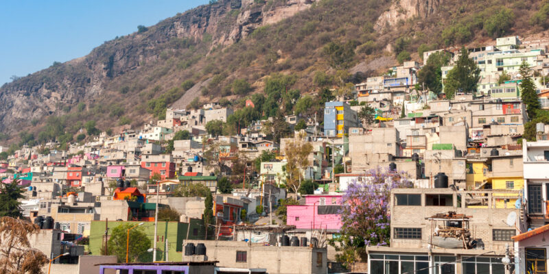
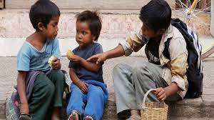
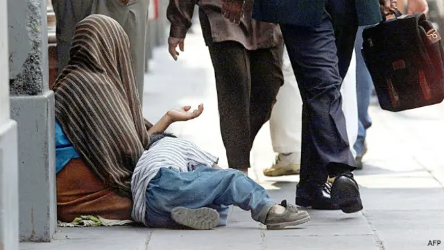
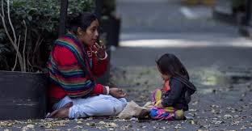

POVERTY IN MEXICO
La pobreza en México es un problema estructural que afecta a millones de personas y tiene múltiples causas, incluyendo desigualdad social, bajos salarios y acceso limitado a educación y salud.
Datos clave:
1. Según el Consejo Nacional de Evaluación de la Política de Desarrollo Social (CONEVAL), en 2022, el 36.3% de la población (46.8
millones de personas) vivía en pobreza, mientras que el 7.1% (9.1 millones) estaba en pobreza extrema.
2. La pobreza es más alta en zonas rurales e indígenas, especialmente en estados como Chiapas, Guerrero y Oaxaca.
Causas principales
1. Desigualdad económica: La riqueza está concentrada en pocas manos.
2. Bajos salarios: Muchas personas trabajan, pero sus ingresos no son suficientes.
3. Falta de acceso a educación y salud: Servicios básicos insuficientes.

4. Inflación y crisis económica: El aumento de precios reduce el poder adquisitivo.
5. Corrupción y mala gestión de recursos: Impacta el desarrollo social.
Consecuencias:
1. Desnutrición y problemas de salud 🏥
2. Falta de oportunidades educativas 📚
3. Migración y desplazamiento forzado 🚶♂️
4. Inseguridad y violencia 🔥
Posibles soluciones
1. ✔️ Mayor inversión en educación y empleo.
2. ✔️ Programas sociales más eficaces.
3. ✔️ Políticas económicas que reduzcan la desigualdad.
4. ✔️ Apoyo al desarrollo rural e indígena.

📌 Conclusión: La pobreza en México sigue siendo un reto, pero con estrategias adecuadas
y equitativas, es posible mejorar la calidad de vida de millones de personas. 🌎